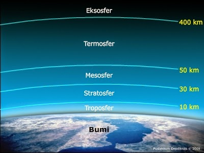
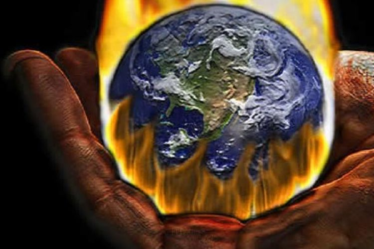

Ketika kita melihat ke langit biru yang luas di siang hari atau gemerlap bintang di malam hari, kita
sedang memandang bagian dari sesuatu yang sangat penting bagi kehidupan kita: atmosfer Bumi. Atmosfer adalah
lapisan gas yang melingkupi planet kita, memberikan kondisi yang memungkinkan kehidupan berkembang dan
berlangsung. Mari kita telusuri lebih dalam mengenai atmosfer, lapisannya, fungsi-fungsi utamanya, serta
dampak-dampaknya jika tidak terawat.
Atmosfer adalah lapisan gas-gas yang mengelilingi planet atau benda langit lainnya. Pada Bumi, atmosfer
terdiri dari beberapa gas utama seperti nitrogen, oksigen, argon, dan karbon dioksida, bersama dengan sejumlah
kecil gas-gas lainnya. Ini adalah selubung yang melindungi planet kita dari radiasi berbahaya dari matahari,
mengatur suhu global, dan menyediakan oksigen yang diperlukan untuk kehidupan.
Lapisan-Lapisan Atmosfer

Atmosfer bumi terbagi menjadi beberapa lapisan yang berbeda, yang masing-masing memiliki karakteristik
unik dan berperan penting dalam menjaga keseimbangan ekosistem planet kita. Secara umum, lapisan-lapisan ini
adalah:
1. Troposfer: Lapisan terbawah atmosfer yang berbatasan langsung dengan permukaan bumi. Hampir
semua
cuaca terjadi dan kehidupan berlangsung.
2. Stratosfer: Lapisan di atas troposfer yang berisi ozon, yang bertindak sebagai filter UV alami yang
melindungi kehidupan di bumi dari radiasi berbahaya.
3. Mesosfer: Lapisan yang terletak di atas stratosfer dan merupakan tempat terjadinya fenomena meteor
seperti bintang jatuh.
4. Termosfer: Lapisan yang berbatasan dengan luar angkasa, di mana suhu meningkat dengan
ketinggian karena interaksinya dengan radiasi matahari.
5. Eksosfer: Lapisan paling luar, di mana beberapa partikel atmosfer mulai menyebar ke luar angkasa dan
interaksi dengan angin matahari.
Fungsi Atmosfer
Atmosfer memiliki beberapa fungsi penting bagi kehidupan di Bumi:
1. Pelindung dari Radiasi Matahari: Ozon di stratosfer bertindak sebagai filter alami yang melindungi
kehidupan dari radiasi ultraviolet yang merusak.
2. Pengatur Suhu Global: Atmosfer menahan panas dari Matahari, menjaga suhu Bumi dalam kisaran yang
mendukung kehidupan.
3. Menyediakan Oksigen: Melalui proses fotosintesis oleh tumbuhan dan alga, atmosfer menyediakan oksigen
yang kita butuhkan untuk bernapas.
4. Pengatur Cuaca dan Iklim: Atmosfer mempengaruhi pembentukan awan, curah hujan, dan pola angin,
memengaruhi iklim global dan cuaca lokal.
Dampak Jika Tidak Terawat

Jika atmosfer tidak terawat dengan baik, dampaknya bisa sangat merugikan bagi kehidupan di bumi seperti
yang sudah tidak asing lagi, pemanasan global. Pemanasan global adalah peningkatan kadar gas rumah kaca
seperti karbon dioksida dapat menyebabkan pemanasan global, mengakibatkan perubahan iklim yang ekstrim dan
berbahaya.
Jika tidak terawat, hal yang bisa terjadi adalah
penipisan lapisan ozon. Pencemaran seperti CFC telah menyebabkan penipisan lapisan ozon, meningkatkan risiko
paparan radiasi UV berbahaya.
Kerusakan lingkungan yang disebabkan dari pencemaran udara, limbah industri, dan deforestasi
yang dapat mengakibatkan degradasi
kualitas udara dan air, mengancam kehidupan makhluk hidup.
Ada juga bencana alam yang ekstrem. Gangguan pada pola cuaca dan iklim dapat meningkatkan kejadian
bencana alam
seperti badai, banjir, dan kekeringan.
Dampak yang dibawa jika atmosfer bumi kita tidak terawat cukup banyak dan bahaya untuk makhluk hidup.
Kesimpulan
Dalam kesimpulan, atmosfer Bumi adalah keajaiban alam yang memberikan lingkungan yang mendukung kehidupan.
Namun, perawatan dan perlindungannya sangatlah penting untuk menjaga keberlanjutan dan kesejahteraan planet
kita. Melalui upaya kolektif untuk mengurangi polusi, merawat sumber daya alam, dan mengurangi emisi gas
rumah kaca, kita dapat menjaga atmosfer Bumi agar tetap sehat dan berfungsi dengan baik bagi generasi yang
akan datang.